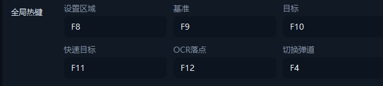
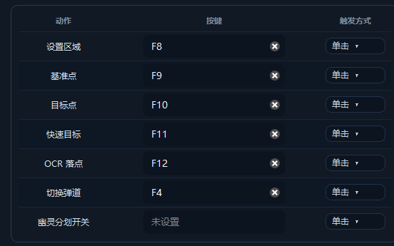
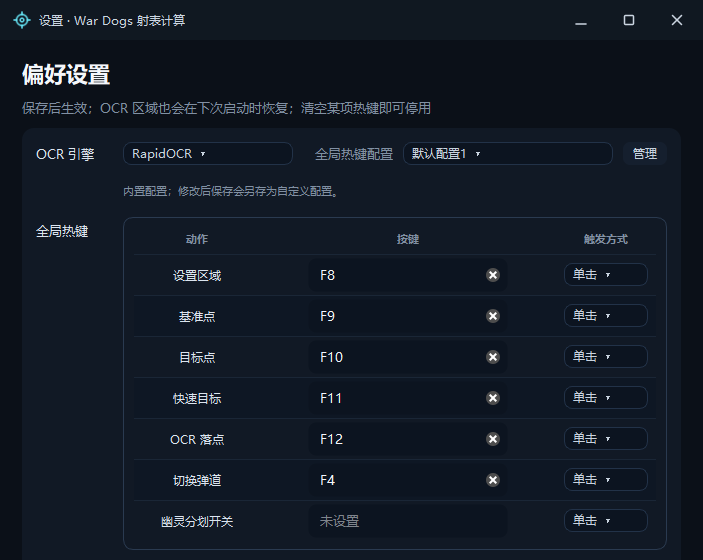
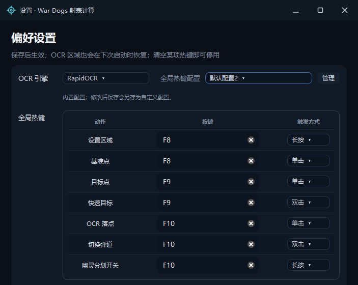
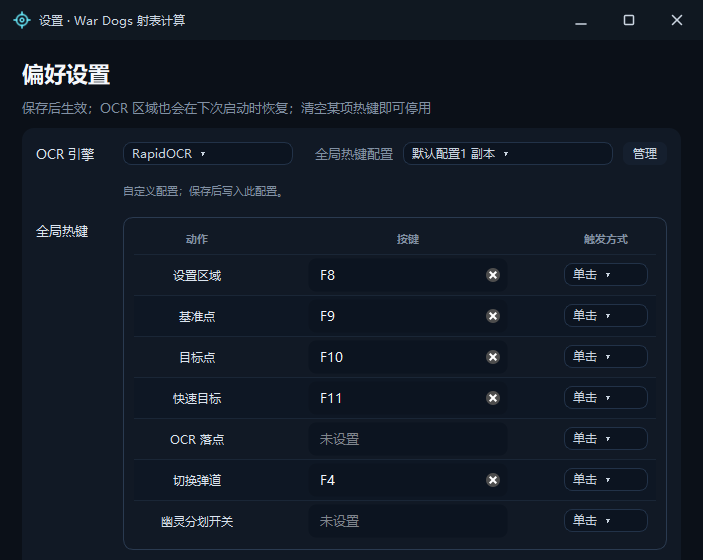
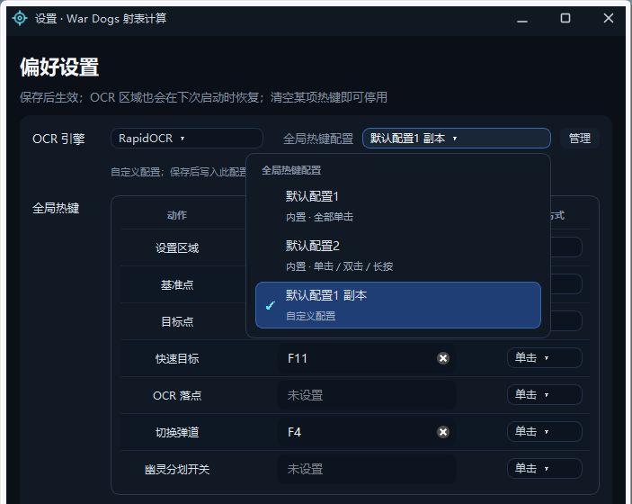
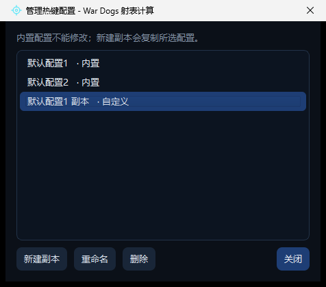
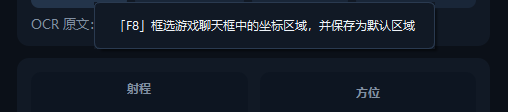
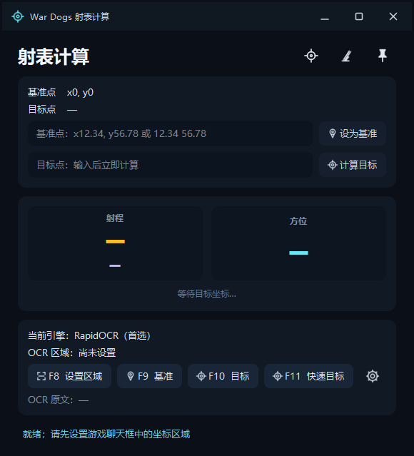
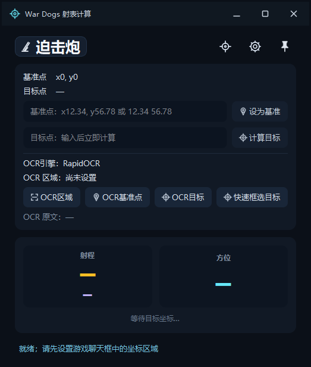

本材料供作者核对交互与行为，不参与合并：截图取自默认配置，未包含个人设置；PDF 与源文件放在独立审阅分支 review/hotkey-profile-assets。
全局热键由 6 个固定输入框改为可配置档案。新增三项能力：清空绑定、单击、双击、长按、幽灵分划开关热键。默认档案与上游键位一致，上游文件只有扁平热键字段，读取后不改变键位。
| 动作 | 上游 v1.4.2 | 默认配置1 | 默认配置2 |
|---|---|---|---|
| 设置区域 | F8 | F8 单击 | F8 长按 |
| 基准点 | F9 | F9 单击 | F8 单击 |
| 目标点 | F10 | F10 单击 | F9 单击 |
| 快速目标 | F11 | F11 单击 | F9 双击 |
| OCR 落点 | F12 | F12 单击 | F10 单击 |
| 切换弹道 | F4 | F4 单击 | F10 双击 |
| 幽灵分划开关 | 无 | 未设置 | F10 长按 |
| 组合 | 行为 | 等待 |
|---|---|---|
| 独立单击 | 按下即响应。 | 无 |
| 单击 + 双击（同键） | 单击等待系统双击窗口结束；窗口内再次按下则执行双击动作。 | 最多一个双击窗口 |
| 单击 + 长按（同键） | 未达长按阈值的短按在松开时触发单击；按住达到阈值触发长按。 | 按下到松开 |
| 独立双击 / 独立长按 | 双击在第二下按下时响应；长按达到阈值时响应。 | 阈值内 |
双击窗口跟随系统设置，Windows 默认 500 ms；长按阈值约 400 ms。两项数值均固定，不提供单独设置项。
示例：F9 单击设置目标点，双击快速框选目标。第二下落在窗口内时，单击动作被取消。
示例：F8 短按设置基准点，长按框选区域；F10 长按开关幽灵分划。
| 参数 | 取值 | 来源 |
|---|---|---|
| 长按阈值 | 400 ms | 固定常量 |
| 双击窗口 | 系统设置，默认 500 ms | 系统双击时间 |

上游 v1.4.2 六个按键分两行排布，每格只标动作名；没有触发方式，也没有停用入口。

新版 · 默认配置1 动作、按键、触发方式三列；行尾清空按钮；未绑定的幽灵分划开关显示“未设置”，不注册监听。

顶部为 OCR 引擎、全局热键配置与“管理”入口；内置配置只读，修改后保存会另存为副本。

默认配置2 只占用 F8–F10：F8 长按框选区域、单击设置基准点；F9 单击设置目标点、双击快速框选；F10 单击录入落点、双击切换弹道、长按开关幽灵分划。

清空 OCR 落点并保存：该行显示“未设置”，顶部档案由内置的默认配置1 另存为“默认配置1 副本”。上游文件没有档案字段，读取时保持扁平字段原值；只有与默认配置1 不一致时才生成自定义档案。

下拉中区分内置与自定义；选中即切换当前方案的键位与触发方式。切换档案会丢弃尚未保存的按键修改。

内置档案只读；自定义档案可新建副本、重命名、删除，上限 100 个。列表中的“自定义”标签与来源档案分开显示。

悬停动作按钮显示该动作当前的键位与触发方式；提示内容随档案与手势设置更新。
ctest 8/8 通过，本提交树重跑，9.61 s：core、vehicle ballistics、continuous calibration、ghost reticle、terrain、vehicle UI、settings、OCR。上游对照版本在同一环境构建，8/8 通过，15.04 s。
[INFO] hotkey.configure key0=F8[single](vk=0x77,mod=0x4000) key1=F9[single](vk=0x78,mod=0x4000) key2=F10[single](vk=0x79,mod=0x4000) key3=F11[single](vk=0x7A,mod=0x4000) key4=F12[single](vk=0x7B,mod=0x4000) key5=F4[single](vk=0x73,mod=0x4000) key6=(未设置) key7=Ctrl+Alt+Q[single](vk=0x51,mod=0x4003) [INFO] hotkey.hook_started count=7
[INFO] hotkey.configure key0=F8[single](vk=0x77,mod=0x4000) key1=F9[single](vk=0x78,mod=0x4000) key2=F10[single](vk=0x79,mod=0x4000) key3=F11[single](vk=0x7A,mod=0x4000) key4=(未设置) key5=F4[single](vk=0x73,mod=0x4000) key6=(未设置) key7=Ctrl+Alt+Q[single](vk=0x51,mod=0x4003) [INFO] hotkey.hook_started count=6
key0–key6 为七个动作热键，key7 为覆盖层开关（原有）。清空 OCR 落点（key4）后，该项记为 (未设置)，监听数量由 7 降为 6。
hotkey_profile=classic [hotkey_profiles] count=0
默认状态为 classic，不产生自定义副本；上游文件若已有扁平字段，则按字段值判断是否生成副本。清空后保存会写出 custom-1、count=1 与对应的 profile0_* 字段。

上游 v1.4.2 坐标结果与 OCR 区域分成两块，快捷键只体现在按钮文字里。

新版 OCR 引擎、区域状态与四个采集按钮并入坐标卡片；结果区与状态栏保持原位。